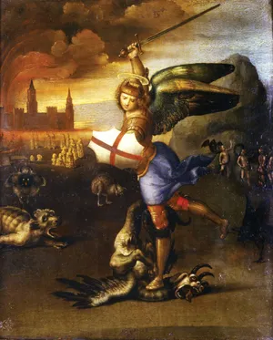
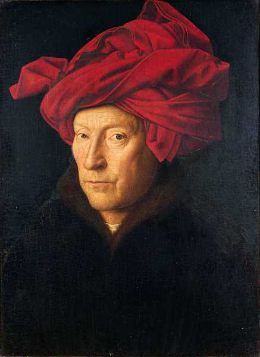
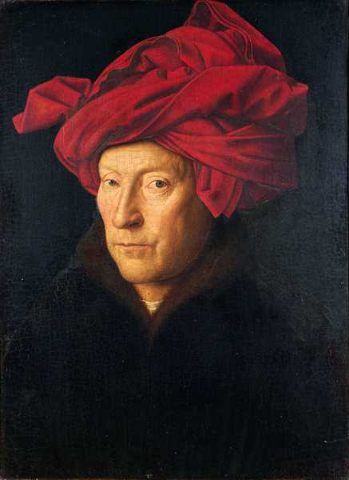

The Art of The Renaissance
High Renaissance art, which flourished for about 35 years, from the early 1490s to 1527, when Rome was sacked by imperial troops, revolves around three towering figures: Leonardo da Vinci (1452–1519), Michelangelo (1475–1564), and Raphael (1483–1520). Each of the three embodies an important aspect of the period.

 


Renaissance art, painting, sculpture, architecture, music, and literature produced during the 14th, 15th, and 16th centuries in Europe under the combined influences of an increased awareness of nature, a revival of classical learning, and a more individualistic view of man. Scholars no longer believe that the Renaissance marked an abrupt break with medieval values, as is suggested by the French word renaissance, literally “rebirth.”
continue your journey:
part four
Simple Div Link
Learn more about the art of the Renaissance here